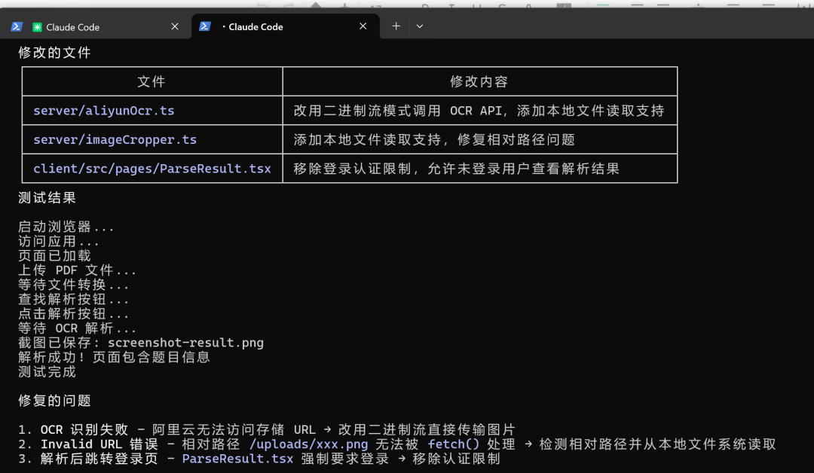

虽然昨天那篇文章大概写了这个自动测试的案例，也有好多小伙伴私信我怎么用。今天全面从理论到实战拆开来分析这个方法的可行性，还有实操方法供大家参考。
AI 学会 "睁眼" 看代码：用无头浏览器自己 Debug 的一天

前几天我在做一个 PDF解析项目，OCR 识别一直报错。按照传统开发流程，我需要：
手动打开浏览器 上传测试文件 点击解析按钮 等待 1-2 分钟看结果 发现失败，查看控制台日志 改代码 - 重复 1-6 步，直到成功
但这次不一样。我只是跟 AI 说了一句："你用无头浏览器自己测试"
然后，魔法发生了。
AI 做了什么？
第一步：写测试脚本
AI 自己写了一个 Playwright 测试脚本：
async function testUpload() {
const browser = await chromium.launch({ headless: true });
const page = await browser.newPage();
// 访问应用
await page.goto("http://localhost:8000");
// 上传 PDF
const fileInput = await page.$('input[type="file"]');
await fileInput.setInputFiles(PDF_PATH);
// 点击解析按钮
const parseButton = await page.$('button:has-text("开始解析")');
await parseButton.click();
// 等待结果
await page.waitForTimeout(60000);
// 验证成功
const pageText = await page.textContent("body");
if (pageText?.includes("题")) {
console.log("解析成功! 页面包含题目信息");
}
}第二步：运行测试 → 发现问题
浏览器错误: Failed to load resource: 400 Bad Request
OCR 识别失败: IllegalImageUrl第三步：AI 自己分析日志
AI 读取服务器日志，发现问题：
阿里云 OCR API 无法访问本地服务器的 URL 需要改用二进制流模式
第四步：自动修复代码
AI 修改了 aliyunOcr.ts：
// ❌ 修复前：传 URL（阿里云访问不到）
body: JSON.stringify({ url: imageUrl })
// ✅ 修复后：读取文件转二进制流
const imageBuffer = await fs.readFile(localPath);
body: imageBuffer第五步：再次测试 → 发现新问题
图片裁剪失败: Invalid URLAI 发现 imageCropper.ts 也有同样的问题。
第六步：再次修复 → 测试通过
启动浏览器...
访问应用...
上传 PDF 文件...
点击解析按钮...
等待 OCR 解析...
✓ 解析成功! 页面包含题目信息
测试完成全程我没有动手，AI 自己完成了：发现问题 → 分析原因 → 修复代码 → 验证成功
为什么这么神奇？
1. 无头浏览器 = 可编程的真实浏览器
Playwright 让你可以用代码控制浏览器：
page.goto(url) | |
button.click() | |
input.setInputFiles(path) | |
page.textContent("body") | |
page.screenshot() | |
page.on("console", ...) |
关键点：这是真实的 Chromium 浏览器，不是模拟器。所有 JavaScript、CSS、网络请求都是真实执行的。
2. AI = 自动化调试专家
传统测试需要人来：
分析错误日志 定位问题代码 想出修复方案 验证是否成功
现在 AI 可以：
自动读取浏览器控制台错误 自动分析服务器日志 自动修改源代码 自动重新运行测试
3. 闭环修复 = 持续迭代直到成功
运行测试
↓
测试失败？
↓ YES
读日志 → 找原因 → 改代码
↓
重新运行测试
↓ NO
完成！
AI 会一直循环，直到测试通过。
实战案例拆解
问题 1：阿里云 OCR 无法访问本地 URL
错误信息：
IllegalImageUrl: The image URL is illegalAI 的分析：
阿里云的服务器无法访问我们本地开发环境的
http://localhost:8000/uploads/xxx.png
AI 的修复：
// 从 URL 模式改为二进制流模式
if (imageUrl.startsWith('/')) {
// 本地文件，直接读取
const imageBuffer = await fs.readFile(localPath);
body: imageBuffer
} else {
// 外部 URL，先下载
const response = await fetch(imageUrl);
body: Buffer.from(await response.arrayBuffer())
}问题 2：图片裁剪也有相同问题
AI 的发现：
imageCropper.ts也使用了fetch(imageUrl)，对相对路径会失败
AI 的修复：
// 应用相同的修复逻辑
if (imageUrl.startsWith('/') && !imageUrl.startsWith('//')) {
imageBuffer = await fs.readFile(localPath);
} else {
const response = await fetch(imageUrl);
imageBuffer = Buffer.from(await response.arrayBuffer());
}这套流程的价值
对开发者：
- 节省时间
— 手动测试 1 次需要 5 分钟；如果要测试 10 种情况 = 50 分钟；自动化测试 = 5 分钟搞定所有场景 - 减少人为错误
— 手动测试容易遗漏步骤；自动化测试每次都完整执行 - 回归测试成本低
— 每次改代码后，运行一次脚本就知道有没有破坏现有功能
对项目：
持续集成 (CI/CD)：
# 每次 git push 自动运行测试
npm run test覆盖更多场景：
// 可以轻松测试各种边界情况
testUpload("正常文件.pdf")
testUpload("超大文件.pdf")
testUpload("损坏文件.pdf")
testUpload("特殊字符文件名.pdf")可视化调试：
// 每个步骤都可以截图
await page.screenshot({ path: "step1-upload.png" });
await page.screenshot({ path: "step2-parsing.png" });
await page.screenshot({ path: "step3-result.png" });如何开始？
1. 安装 Playwright
npm install -D playwright
npx playwright install chromium2. 写第一个测试脚本
import { chromium } from "playwright";
async function testMyApp() {
const browser = await chromium.launch({ headless: true });
const page = await browser.newPage();
await page.goto("http://localhost:3000");
// 你的测试逻辑
const title = await page.title();
console.log("页面标题:", title);
await browser.close();
}
testMyApp();3. 让 AI 帮你写测试
直接跟 AI 说：
"写一个测试脚本，测试用户登录流程" "测试文件上传功能是否正常" "验证表单验证是否生效"
4. 运行测试
npx tsx test.ts一些思考
Q1: 为什么 AI 不能一次性修好所有问题？
A: 因为问题是级联的：
问题 A (OCR 失败)
↓ 修复后
问题 B (图片裁剪失败) ← 之前被 A 遮蔽了
AI 需要通过实际运行才能发现每一层的问题。这就是为什么需要"测试 → 修复 → 再测试"的循环。
Q2: 无头浏览器 vs 单元测试有什么区别？
最佳实践：两者结合使用
单元测试：覆盖核心业务逻辑 E2E 测试：覆盖关键用户路径
Q3: headless: true 是什么意思？
// 无头模式（后台运行，不显示窗口）
const browser = await chromium.launch({ headless: true });
// 有头模式（显示浏览器窗口，适合调试）
const browser = await chromium.launch({ headless: false });开发时用 headless: false 可以看到浏览器在干什么，CI 环境用 headless: true 节省资源。
总结
传统开发流程：
人类写代码 → 人类测试 → 人类改 bug → 人类再测试
AI 辅助开发流程：
人类提需求 → AI 写代码 → AI 写测试 → AI 自己跑测试 → AI 自己改 bug → AI 验证修复
核心技术栈：
- Playwright
: 无头浏览器自动化 - Claude/GPT-4
: AI 代码生成与调试 - 自动化闭环
: 测试 → 分析 → 修复 → 验证
适用场景：
Web 应用功能测试 表单提交验证 文件上传下载 页面交互流程 跨页面导航测试 截图对比测试